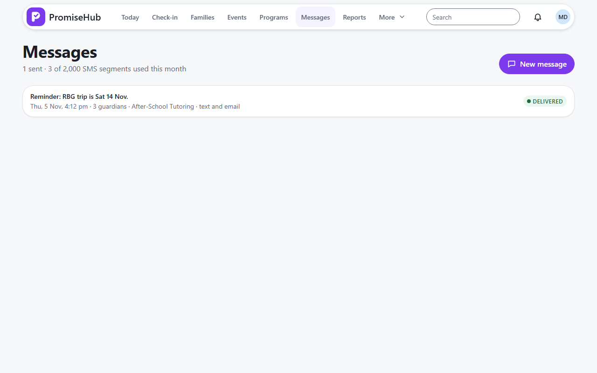
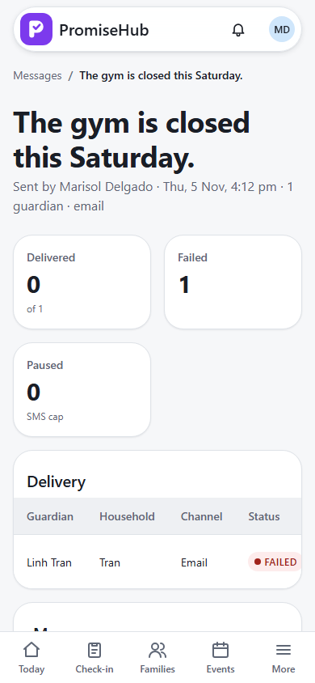

PromiseHub · Video 10
Send guardian messages
Who it reaches, what it costs, and what happened to each household
Who it reaches, what it costs, and what happened to each household
Three households by text; the Riveras in Spanish.
Texts off, email on; a household without email shows as failed.


| Case | Answer |
|---|---|
| Job runs twice | Each household sent once |
| Provider refuses | Retried, then failed with the reason |
| At the cap | Email instead, or paused |
| Youth worker | 403 |
| Another organization / Messages off | 404, nothing sent |
Next: edit a permission slip